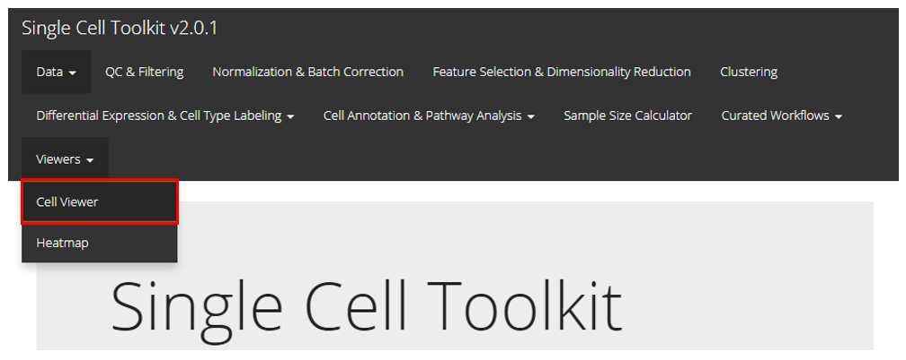
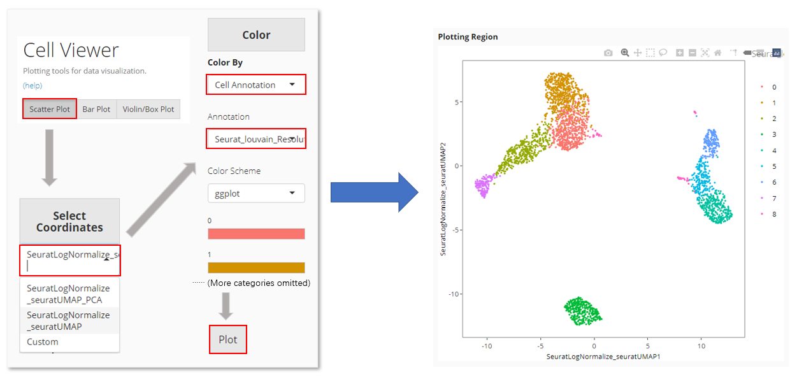

General UI Visualization with Cell Viewer
Source:vignettes/articles/ui_cellViewer.Rmd
ui_cellViewer.RmdIntroduction

SingleCellTK provides a general portal for cell level visualization, including the functionality to create scatter plot, bar plot, and violin plot. Users should find the Cell Viewer as instructed in the screenshot above. This documentation will start with a quick example and then talk about the detail.
Quick Example
Here we provide a common case of plotting a UMAP with clusters labeled. We take the frequently used “PBMC3k” dataset, provided by 10X, as an example. The detailed screenshot for each prerpocessing step will not be included, but users can refer to the documentation of those steps within other pages.
- The example “PBMC3k” dataset can be imported at the SCTK landing page. For a quick demonstration, QC and filtering are skipped, but it is always recommended to have this done.
- Normalize the raw counts with “Seurat lognormalize” method
- Use the log-normalized assay to produce a UMAP by using Seurat’s method. Note that usually it is recommended to find the variable features and calculate the PCA before reaching to the UMAP, but “SeuratUMAP” has integrated all these steps at one click.
- For the clustering, select the PCA embedding (produced when calculating the UMAP) as the matrix to perform Seurat’s louvain algorithm on.

In Cell Viewer:
- Locate at “Scatter Plot” tab
- Select the UMAP at “Select Coordinates”.
- In “Color”, choose to color by “Cell Annotation”
- Select the clustering result from the cell annotation option list, which comes out after Step 3.
- Click on “Plot” button
Step Specific Introduction
The procedure of creating a single plot in Cell Viewer can be generalized as three steps: axis selection, color specification, and peripheral setting.
Axis

In “scatter plot” tab, the X-/Y-axis can be fully customized, while quick access for existing dimension reduction results will also be listed. “Fully customized” means an axis can be a dimension of a dimension reduction, the expression of a feature from an assay, or one of the cell annotations. In “bar plot” and “violin plot” tab, the X-axis is limited to cell annotation level, while the Y-axis can still be fully customized.
Color

The color setting determines the color of each dot or bar in the plot. In “Scatter Plot” tab, colors can be set by the value of a dimension from a dimension reduction embedding, the expression value of a gene from an assay, one of the cell annotation, or a single color for all dots (cells). While SCTK only supports single color plotting for bar plot and violin plot.